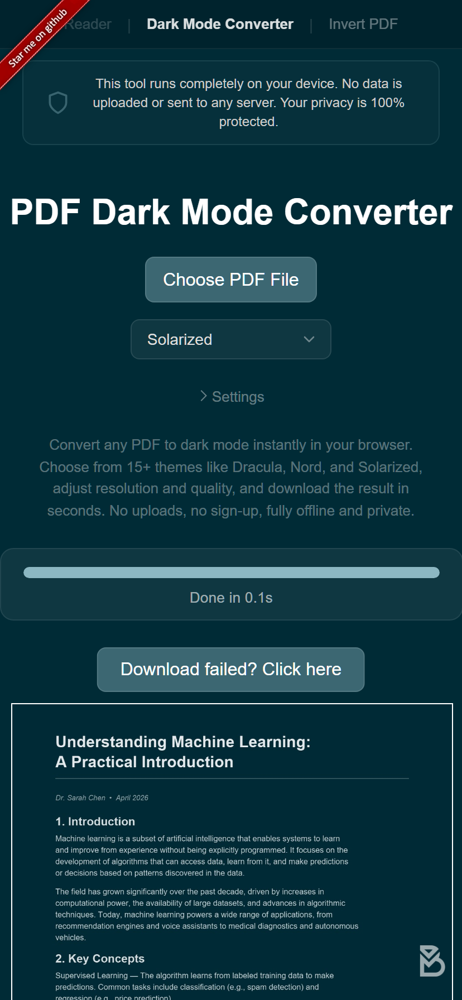

Mode Sombre pour PDF sur iPhone : Guide Simple
Activer le mode sombre sur iOS change vos menus et applications, mais ne touche pas au contenu des fichiers PDF. Ouvrez n'importe quel PDF dans Safari, Fichiers ou Livres et vous verrez toujours des pages blanches éclatantes. Si vous lisez beaucoup de documents sur votre téléphone, surtout au lit ou dans les transports, voici comment y remédier.
Convertissez le PDF dans votre navigateur
La solution la plus rapide est de convertir le fichier directement sur votre iPhone :
- Ouvrez le Convertisseur PDF Mode Sombre dans Safari ou Chrome sur votre iPhone.
- Appuyez sur le bouton d'envoi et sélectionnez votre PDF depuis Fichiers, iCloud ou tout autre emplacement.
- Choisissez un thème. Il y a plus de 16 options, dont Dracula, Nord et Solarized.
- Le fichier converti se télécharge automatiquement. Ouvrez-le dans votre lecteur préféré.
La conversion s'exécute localement sur votre téléphone, votre fichier n'est donc jamais envoyé à un serveur. Même sur les iPhone plus anciens, le processus est rapide car l'outil utilise le GPU de votre appareil pour la transformation des couleurs.

Qu'en est-il d'Inversion intelligente ?
iOS dispose d'une fonction d'accessibilité appelée Inversion intelligente (Réglages > Accessibilité > Affichage et taille du texte > Inversion intelligente). Elle inverse la plupart des couleurs de l'écran tout en essayant de préserver les images et les médias. Le problème, c'est que les PDF sont une zone grise. Certains lecteurs PDF réagissent à l'Inversion intelligente, d'autres l'ignorent, et les résultats sont souvent incohérents : le texte peut s'assombrir mais les images ont un rendu étrange.
L'Inversion intelligente n'affecte que l'affichage à l'écran. Si vous partagez le fichier ou changez d'application, le PDF retrouve son apparence d'origine.
Qu'en est-il de Réduire le point blanc ?
Un autre paramètre d'iOS est Réduire le point blanc (Réglages > Accessibilité > Affichage et taille du texte). Cela réduit la luminosité globale de l'écran, ce qui peut aider dans une pièce sombre. Mais ça ne transforme pas les couleurs du PDF en thème sombre. Vous continuez de lire du texte noir sur un fond blanc atténué.
Pourquoi convertir est préférable sur iPhone
- Les couleurs sombres sont permanentes dans le fichier PDF, pas juste un filtre d'écran.
- Le rendu est identique dans toutes les applications : Safari, Fichiers, Livres, GoodReader, PDF Expert, etc.
- Vous choisissez le thème et la nuance exacte que vous voulez.
- Rien à installer. Le convertisseur fonctionne directement dans votre navigateur.
Si vous utilisez un iPad, l'écran plus grand offre quelques avantages - en savoir plus dans notre guide du mode sombre pour iPad. Les utilisateurs Android trouveront des étapes similaires dans le guide Android.
Essayez : Ouvrez le Convertisseur PDF Mode Sombre sur votre iPhone, choisissez un thème et convertissez votre PDF en quelques secondes. Gratuit, privé, fonctionne dans Safari ou Chrome.
Questions Fréquentes
Non, le mode sombre d'iOS ne change que l'interface du système. Les pages des PDF conservent leur fond blanc d'origine dans toutes les applications.
Oui. Ouvrez le Convertisseur PDF Mode Sombre dans Safari ou Chrome sur votre iPhone, envoyez votre PDF, choisissez un thème et téléchargez la version sombre.
Oui, le convertisseur s'exécute entièrement dans Safari sur iPhone. Votre fichier reste sur votre appareil et est traité grâce au GPU de votre téléphone.